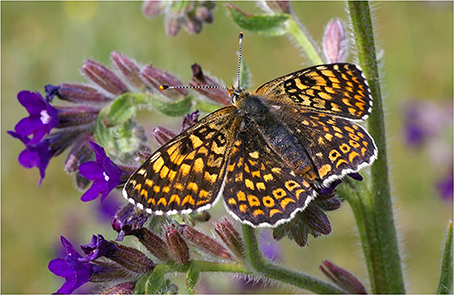

The strategy of scientific model building is the strategy of abstraction. An abstraction is devised to explain the workings of certain mechanistic principles and, as subjective constructs they are neither right nor wrong. Rather, abstractions obscure or enlighten the process under study, yielding useless or useful models. Two opposing approaches are usually followed in the process of ecological model construction as a route to understanding. In the first one, a model is worked out from theoretical principles and a set of testable predictions are then confronted with data from real systems. In the second approach, it is the detailed knowledge of the natural history of a particular system what drives the level of complexity of a mechanistic model used to fit empirical data, and this model is further used to reproduce the dynamics of the original system and, ideally, of other systems. Given the current challenges in the study of population dynamics, which abstraction is more useful?

@article{Almaraz2014,
title = {Simple Models, Complex Models, Useful Models: Can We Tell Them from the Flap of a Butterfly's Wings?},
author = {Almaraz, Pablo},
date = {2014-08-29},
journaltitle = {Frontiers in Ecology and Evolution},
volume = {2},
pages = {54},
doi = {10.3389/fevo.2014.00054}
}